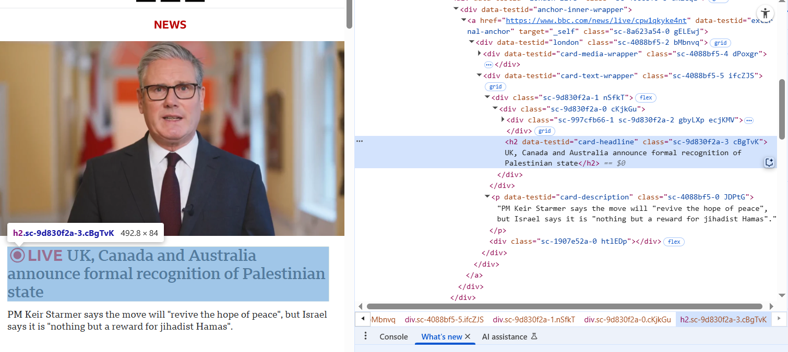
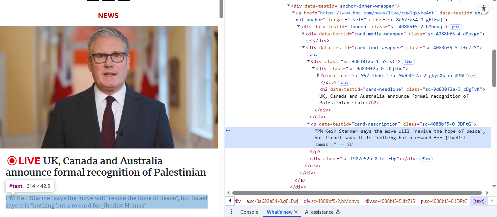

<body>
<div>
<h1>Example Domain</h1>
<p>This domain is for use in illustrative examples in documents. You may use this
domain in literature without prior coordination or asking for permission.</p>
<p><a href="https://www.iana.org/domains/example">More information...</a></p>
</div>
</body>
</html>5 HTML Data
So far this semester we have investigated how we can scrape both JSON and XML data from webpages. Another method we will investigate is HTML scraping. This will be a useful topic considering every webpage is written in HTML with the content wrapped in tags (like <h1> for titles, <p> for paragraphs, and <table> for tables, and many many more). Within these tags we can have attributes, just like we did with XML data, that will make it easier to target specific content. Before we dive into the material, a helpful hint in determining which tags and attributes to reference it to right-click on the text in the browser and choosing “Inspect”. This will allow us to view the raw HTML structure, which we can use to identify what tag is related to the content, and then we can extract it using the revest library in R.
5.1 Introductory Example
To understand the general idea of this, we will look at the website https://example.com/. If we were to right-click on the page and “View Page Source”, it will open up another tab to show us the raw HTML structure. Scrolling to the very bottom of the page, we can see the <body> tag, which displays the text currently on the page. It should look something like this:
In order to extract this data and use in R, we can use the rvest library along with the read_html(), html_elements(), and html_text() functions. In the example below, we can see how we pull the main heading information stored in the <h1> tag.
library(rvest)
library(dplyr)
page <- read_html("https://example.com")
page |> html_elements("h1") |> html_text()[1] "Example Domain"We can also extract the paragraph text stored in the <p> tag. Notice how we get multiple character elements because there are multiple <p> tags present.
page |> html_elements("p") |> html_text()[1] "This domain is for use in illustrative examples in documents. You may use this\n domain in literature without prior coordination or asking for permission."
[2] "More information..."
tags, we could use a few different methods. If we only wanted the first one we could alter the function to be html_element(). We could also use the nth-of-type() argument to select which one to extract. Finally, if the tag has a nested element, we can reference it by typing in both tags as seen below:
page |> html_element("p") |> html_text()[1] "This domain is for use in illustrative examples in documents. You may use this\n domain in literature without prior coordination or asking for permission."page |> html_elements("p:nth-of-type(1)") |> html_text()[1] "This domain is for use in illustrative examples in documents. You may use this\n domain in literature without prior coordination or asking for permission."page |> html_elements("p:nth-of-type(2)") |> html_text()[1] "More information..."page |> html_elements("p a") |> html_text()[1] "More information..."In order to access the attribute of the tag, we can use the html_attr() function as seen below:
page |> html_element("p a") |> html_attr("href")[1] "https://www.iana.org/domains/example"5.2 BBC Example
Now that we have seen a basic example, lets see a slightly more complex one. If we go to https://www.bbc.com/news, we can see a lot of different news articles along with short descriptions of them. Looking at the “View Page Source”, we can see that it is virtually unreadable due to the vast amount of data present. And since it will not be fun to read through it all to see what the different tags are called, we can right-click the text we are interested in and then “Inspect” it. A pane will appear on half of the screen that allows us to see what tag the data is saved under. In the example below, we can see the article title is saved under the <h2> tag.
 Looking at the description, we can see that it is saved under the <p> tag.

We can this use this information to scrape the webpage and to get the article titles and descriptions in a similar manner to what we did before
# Note: when you run this you might get different results as the webpage is constantly updated
bbc <- read_html("https://www.bbc.com")
bbc |> html_elements("h2") |> html_text() |> head()[1] "Recognising Palestinian statehood opens another question - who would lead it?"
[2] "UK rewarding Hamas, says mother of freed British-Israeli hostage"
[3] "Recognising Palestinian statehood opens another question - who would lead it?"
[4] "UK rewarding Hamas, says mother of freed British-Israeli hostage"
[5] "UK formally recognises Palestinian state"
[6] "Trump arrives at Charlie Kirk memorial as tens of thousands attend service" bbc |> html_elements("p") |> html_text(trim=TRUE) |> head()[1] "With the president approaching 90 years of age and another possible candidate in jail, finding the right leadership would be a challenge"
[2] "Sir Keir Starmer has insisted Hamas can have \"no future, no role in government, no role in security\"."
[3] "With the president approaching 90 years of age and another possible candidate in jail, finding the right leadership would be a challenge"
[4] "Sir Keir Starmer has insisted Hamas can have \"no future, no role in government, no role in security\"."
[5] "Canada and Australia also announced the move on Sunday, with Israeli PM Benjamin Netanyahu accusing leaders of giving a \"huge reward to terrorism\"."
[6] "The conservative activist was shot and killed while speaking to students at a university in Utah on 10 September." We could do something similar and get the contents of the article as well. We should be weary to do this though, as this information is copyrighted by the BBC and thus we should respect their work product. For this example, we will just display the first few sentences as an example:
article <- read_html("https://www.bbc.com/news/articles/ce800enrglzo")
article |> html_elements("p") |> html_text() |> head(4)[1] "Sir Keir Starmer has announced the UK's recognition of a Palestinian state, in what represents a significant change in government policy."
[2] "In a video statement on X, the prime minister said: \"In the face of the growing horror in the Middle East we are acting to keep alive the possibility of peace and a two-state solution.\""
[3] "Australia and Canada also announced formal recognition of the state of Palestine, with Portugal and France expected to follow."
[4] "The decision has drawn fierce criticism from the Israeli government, families of hostages held in Gaza and some Conservatives. Responding on Sunday, Israeli Prime Minister Benjamin Netanyahu said a Palestinian state \"will not happen\"."5.3 Scraping Tables
The last example we will look at for now is scraping an HTML table from a webpage and making it available to us in R. For this example, we will look at the Mount St. Mary’s Basketball Teams statistics: https://mountathletics.com/sports/mens-basketball/stats/2024-25. We can see that there are a number of different tables on the page, and by right-clicking the table and hitting the “Inspect” button, we can see that they are all saved under the <table> tag. We can screpe it in a similar manner, only this time we will need to use the html_table() function.
mount <- read_html("https://mountathletics.com/sports/mens-basketball/stats/2024-25")
basketball_tables <- mount |> html_elements("table") |> html_table(fill = TRUE)
overall_stats <- basketball_tables[[2]]
overall_stats# A tibble: 18 × 27
`#` Player GP GS Minutes Minutes FG FG FG `3PT` `3PT` `3PT`
<chr> <chr> <chr> <chr> <chr> <chr> <chr> <chr> <chr> <chr> <chr> <chr>
1 "#" "Playe… GP "GS" TOT AVG FGM FGA FG% 3PT 3PTA 3PT%
2 "04" "Adeba… 36 "36" 1043 29.0 175 340 .515 22 72 .306
3 "08" "Hobbs… 30 "26" 839 28.0 123 333 .369 54 173 .312
4 "13" "Ard J… 21 "3" 512 24.4 87 163 .534 1 6 .167
5 "14" "Cordi… 35 "33" 1037 29.6 160 269 .595 2 7 .286
6 "01" "Pache… 30 "30" 846 28.2 88 188 .468 77 166 .464
7 "45" "Lipsc… 36 "36" 1209 33.6 67 190 .353 36 106 .340
8 "02" "Keyes… 32 "2" 616 19.3 71 190 .374 48 133 .361
9 "23" "Ervin… 34 "14" 525 15.4 60 169 .355 14 52 .269
10 "09" "Khadr… 29 "0" 322 11.1 26 84 .310 12 51 .235
11 "10" "Haigh… 19 "0" 123 6.5 12 45 .267 10 41 .244
12 "05" "Dread… 18 "0" 120 6.7 12 25 .480 7 14 .500
13 "03" "Ogunf… 3 "0" 8 2.7 2 2 1.000 0 0 .000
14 "12" "Wilso… 24 "0" 96 4.0 6 16 .375 2 6 .333
15 "06" "Hartm… 2 "0" 4 2.0 0 0 .000 0 0 .000
16 "TM" "Team\… 36 "0" 0 0.0 0 0 .000 0 0 .000
17 "" "Total" 36 "" 7300 202.8 889 2014 .441 285 827 .345
18 "" "Oppon… 36 "" 7300 202.8 903 2196 .411 313 989 .316
# ℹ 15 more variables: FT <chr>, FT <chr>, FT <chr>, Scoring <chr>,
# Scoring <chr>, Rebounds <chr>, Rebounds <chr>, Rebounds <chr>,
# Rebounds <chr>, PF <chr>, AST <chr>, TO <chr>, STL <chr>, BLK <chr>,
# `Bio Link` <chr>The table we scraped off of the website has 2 different header rows, one being more categorical (“minutes”, “fg”, “scoring”, etc.) with the sub-header row being more detailed. We can combine the header names so that “Minutes_AVG”, “Scoring_AVG”, and “Rebounds_AVG” are not confused for each other. We would want to go ahead and clean the other column names up as well, as “GS_GS” is redundant, but we will let that be an exercise for the reader. One last thing we will do it see how we can convert all of the columns except for name and jersey number into a numeric value using the mutate() and across() functions.
colnames(overall_stats) <- paste(colnames(overall_stats), overall_stats[1, ], sep = "_")
overall_stats <- overall_stats[-1,]
overall_stats_clean <- overall_stats |>
mutate( across(-c(Player_Player, `#_#`), ~ as.numeric(.) ))Warning: There was 1 warning in `mutate()`.
ℹ In argument: `across(-c(Player_Player, `#_#`), ~as.numeric(.))`.
Caused by warning:
! NAs introduced by coercionoverall_stats_clean# A tibble: 17 × 27
`#_#` Player_Player GP_GP GS_GS Minutes_TOT Minutes_AVG FG_FGM FG_FGA
<chr> <chr> <dbl> <dbl> <dbl> <dbl> <dbl> <dbl>
1 "04" "Adebayo, Dola\r\n … 36 36 1043 29 175 340
2 "08" "Hobbs, Dallas\r\n … 30 26 839 28 123 333
3 "13" "Ard Jr., Terrell\r\… 21 3 512 24.4 87 163
4 "14" "Cordilia, Jedy\r\n … 35 33 1037 29.6 160 269
5 "01" "Pacheco, Carmelo\r\… 30 30 846 28.2 88 188
6 "45" "Lipscomb, Xavier\r\… 36 36 1209 33.6 67 190
7 "02" "Keyes, Arlandus\r\n… 32 2 616 19.3 71 190
8 "23" "Ervin, Javon\r\n … 34 14 525 15.4 60 169
9 "09" "Khadre Kébé, Abdou\… 29 0 322 11.1 26 84
10 "10" "Haigh, Patrick\r\n … 19 0 123 6.5 12 45
11 "05" "Dread, Malcolm\r\n … 18 0 120 6.7 12 25
12 "03" "Ogunfuye, Jonathan\… 3 0 8 2.7 2 2
13 "12" "Wilson, Trey\r\n … 24 0 96 4 6 16
14 "06" "Hartman, Jaxon\r\n … 2 0 4 2 0 0
15 "TM" "Team\r\n … 36 0 0 0 0 0
16 "" "Total" 36 NA 7300 203. 889 2014
17 "" "Opponents" 36 NA 7300 203. 903 2196
# ℹ 19 more variables: `FG_FG%` <dbl>, `3PT_3PT` <dbl>, `3PT_3PTA` <dbl>,
# `3PT_3PT%` <dbl>, FT_FTM <dbl>, FT_FTA <dbl>, `FT_FT%` <dbl>,
# Scoring_PTS <dbl>, Scoring_AVG <dbl>, Rebounds_OFF <dbl>,
# Rebounds_DEF <dbl>, Rebounds_TOT <dbl>, Rebounds_AVG <dbl>, PF_PF <dbl>,
# AST_AST <dbl>, TO_TO <dbl>, STL_STL <dbl>, BLK_BLK <dbl>,
# `Bio Link_Bio Link` <dbl>